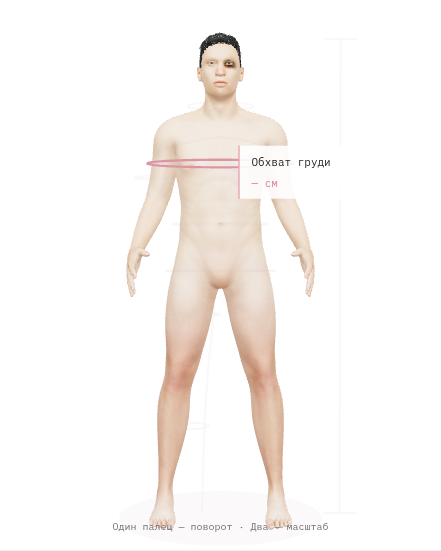
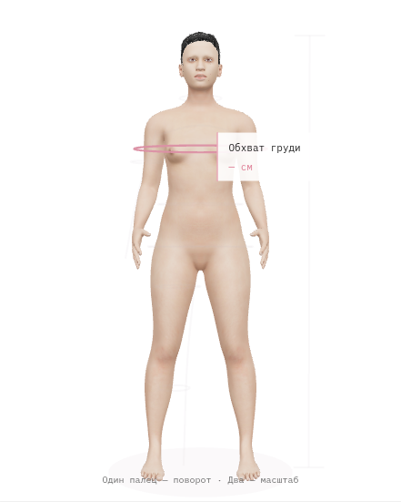
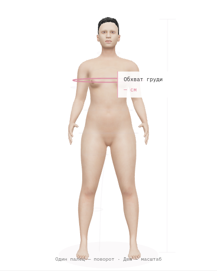
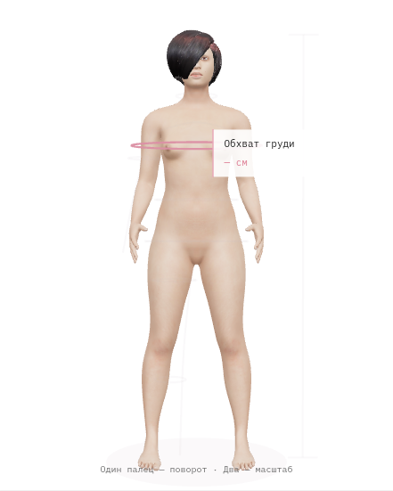
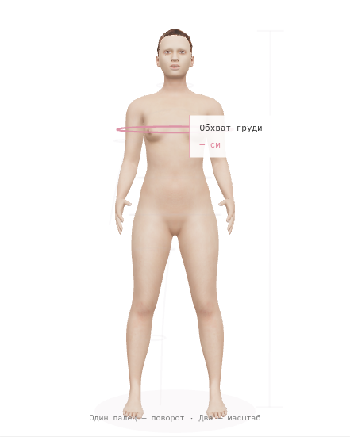
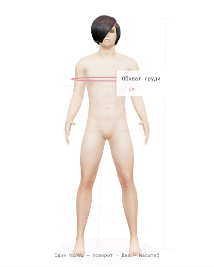
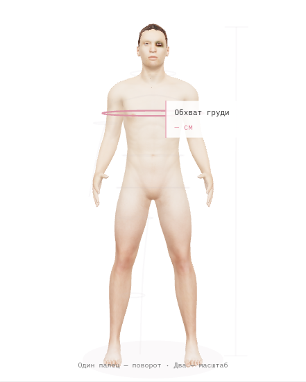

RICHRUSSIANCOMMUNITY / ANATOMY
Нативная анатомическая сетка MakeHuman, расслабленная суставная поза, настоящие macro morphs и три fitted hair-card причёски. Это ориентиры места измерения, не цифровые копии клиентов.
Мужская форма
Женская форма
При ограниченных морфах



Волосы




Работающий интерфейс
Запись Chromium / SwiftShader. Реальный телефон не тестировался; показатели из записи не выдаются за аппаратный mobile FPS.
Источники, проверки и ограничения · Входная сцена